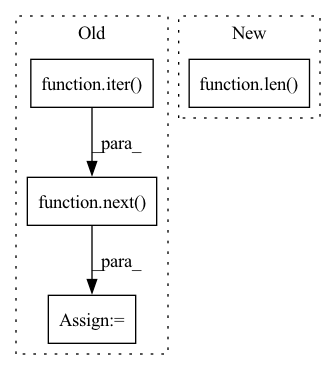

Pattern ID :3154
Before Change
self.source_loader = self.dataset.get_dataloader("train", full=True, classes=source,
batch_size=self.poison_num, shuffle=True, num_workers=0)
target_imgs, _ = self.model.get_data(next(iter(self.target_loader)))
source_imgs, _ = self.model.get_data(next(iter( self.source_loader) ) )
source_imgs = self.add_mark(source_imgs)
noise = torch.zeros_like(target_imgs)
source_feats = self.model.get_layer(source_imgs, layer_output=self.preprocess_layer).detach()After Change
source_feats = self.model.get_layer(source_imgs, layer_output=self.preprocess_layer).detach()
target_imgs, _ = self.model.get_data(next(iter(self.target_loader)))
target_imgs = target_imgs[:len( source_imgs) ]
// -----------------------------Poison Frog--------------------------------- //
def loss_func(poison_imgs):In pattern: SUPERPATTERN
Frequency: 3
Non-data size: 4
Instances Fragment ID: 12000054
Project Name: ain-soph/trojanzoo
Commit Name: ba7a05c0e1d8e0b546a7c0e7c168b1e57ccc0eba
Time: 2020-09-23
Author: ain-soph@live.com
File Name: trojanzoo/attack/backdoor/hidden_trigger.py
M Class Name: Hidden_Trigger
N Class Name: Hidden_Trigger
M Method Name: generate_poisoned_data(2)
N Method Name: generate_poisoned_data(1)
M Parent Class: BadNet
N Parent Class: BadNet
M File Name: trojanzoo/attack/backdoor/hidden_trigger.py
N File Name: trojanzoo/attack/backdoor/hidden_trigger.py
M Start Line: 106
M End Line: 136
N Start Line: 92
N End Line: 124
Before Change
try:
wav_id, noise_batch, noise_len = next(self.noise_data)[0]
except StopIteration:
self.noise_data = iter( self.data_loader())
wav_id, noise_batch, noise_len = next( self.noise_data) [0]
noise_batch = noise_batch.to(lengths.device)
noise_len = noise_len.to(lengths.device)After Change
// Ensure loaded noise batch has enough noises
noise_batch, noise_len = self._load_noise_batch()
if len( noise_batch) < batch_size:
added_noises, added_lens = self._load_noise_batch()
noise_batch = noise_batch.cat(added_noises)
noise_len = noise_len.cat(added_lens) Fragment ID: 12000053
Project Name: speechbrain/speechbrain
Commit Name: 3d973d81f01758ea4419252c9c39eea9dfc83527
Time: 2020-06-04
Author: plantinga.peter@gmail.com
File Name: speechbrain/processing/speech_augmentation.py
M Class Name: AddNoise
N Class Name: AddNoise
M Method Name: _load_noise(3)
N Method Name: _load_noise(4)
M Parent Class: torch.nn.Module
N Parent Class: torch.nn.Module
M File Name: speechbrain/processing/speech_augmentation.py
N File Name: speechbrain/processing/speech_augmentation.py
M Start Line: 153
M End Line: 179
N Start Line: 147
N End Line: 174
Before Change
data_loader = DataLoader(
train_dataset, batch_size=h, shuffle=True
)
rm_add = next(iter( data_loader) )
rm_add = TensorDataset(rm_add[0], rm_add[1])
self.update_namespace(rm_add=rm_add)
if step_id > 0:After Change
// We recover it using the random_split method and getting rid of the
// second split.
rm_add, _ = random_split(
train_dataset, [h, len( train_dataset) - h]
)
self.update_namespace(rm_add=rm_add)
Fragment ID: 12000052
Project Name: continualai/avalanche
Commit Name: a82ae8ee167fda3e9b2ef2c1b6108a4b37742942
Time: 2020-10-19
Author: vincenzo.lomonaco@unibo.it
File Name: avalanche/training/plugins/replay_plugin.py
M Class Name: ReplayPlugin
N Class Name: ReplayPlugin
M Method Name: adapt_train_dataset(4)
N Method Name: adapt_train_dataset(4)
M Parent Class: StrategySkeleton
N Parent Class: StrategySkeleton
M File Name: avalanche/training/plugins/replay_plugin.py
N File Name: avalanche/training/plugins/replay_plugin.py
M Start Line: 61
M End Line: 65
N Start Line: 56
N End Line: 64